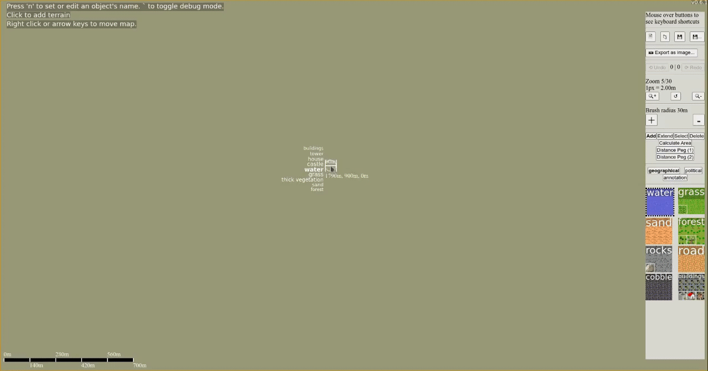

I've been working on my presentation to present my mapping tool senior Honors project at MVNU's sURC. For part of this presentation I wanted an animated gif illustrating the basic drawing functionality of the tool.
I started with OBS studio to record the actual video of me drawing a simple map. Then I imported the video into Kdenlive for editing. OBS recorded the video as 1920x1080, but the actual mapping tool window that I was recording was only 1916x1008 so when I imported it into Kdenlive there was a black bar along the bottom. To solve this, I set the resolution of the Kdenlive project to 1278x672 (the same scale but a smaller resolution to keep the GIF size small) and applied a transform effect to position the original clip within the proper resolution. I set the clip speed to 300%, so that in under 30 seconds people could see an example of an entire (if small) map being created.
With the Kdenlive project ready, I rendered it to an MP4 file for conversion to GIF.
I then converted the MP4 file using
ffmpeg -i in.mp4 -vf "scale=-1:-1,split[s0][s1];[s0]palettegen[p];[s1][p]paletteuse" -r 10 out.gifThen I optimized the gif, lossily, using ImageMagick's mogrify command
mogrify -layers 'optimize' -fuzz 7% out.gifThe final size of the optimized GIF was 3.1MiB, down from a 21MiB unoptimized GIF, an 8.1MiB MP4 file, and an 11MiB original obs output file.
Here's the final GIF: 